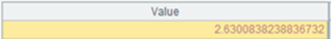
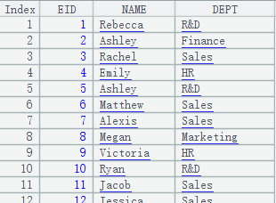

Description:
Synchronously segment an entity table according to a multicursor and return a multicursor.
Syntax:
T.cursor(x:C,¡;wi,...;mcs)
Note:
The function synchronously segments entity table T according to multicursor mcs, during which T¡¯s first field and mcs¡¯s first field will be matched, and returns a multicursor. The fields for segmenting T and mcs should be consistent. If multiple entity tables are involved, use a multicursor as a reference to make sure the segmentation is synchronous.
Parameters:
|
T |
An entity table |
|
x |
Expression |
|
C |
Column alias |
|
wi |
Filtering condition; multiple conditions are separated by comma(s) and their relationships are AND. You can use the following three types of syntax in a filtering condition: 1. K:Ti K is a field in the entity table; Ti is a table sequence whose primary key is K. The expression filters away records where K=Ti.find(K) is false. When K is not a selected field to be output, just do the filtering as usuall. 2.K:Ti:null Filter away all records that can be found. 3.K:Ti:# K=Ti(K); locate corresponding records using sequence numbers and delete those out-of-range ones and those where Ti(K) is false or null. |
|
mcs |
A multicursor generated from an entity table |
Options:
|
@k |
Perform matching using the multicursor¡¯s first field of the key |
Return value:
A multicursor
Example:
|
|
A |
|
|
1 |
for 100 |
|
|
2 |
=to(10000).new(#:k1,rand():c1).sort@o(k1) |
Return a table sequence  |
|
3 |
=to(10000).new(#:k1,rand(10000):c2).sort@o(k1) |
Return a table sequence
|
|
4 |
=to(10000).new(#:k1,rand()*1000:c3).sort@o(k1) |
Return a table sequence  |
|
5 |
=A2.cursor() |
Return a cursor |
|
6 |
=A3.cursor() |
Return a cursor |
|
7 |
=A4.cursor() |
Return a cursor |
|
8 |
=file("D:\\cs1.ctx") |
Generate a composite table file |
|
9 |
=A8.create(#k1,c1) |
Create the composite table¡¯s base table |
|
10 |
=A9.append(A5) |
Append data in A5¡¯s cursor to the base table |
|
11 |
=A9.attach(table1,c2) |
Create attached table table1 on base table |
|
12 |
=A11.append(A6) |
Append data in A6¡¯s cursor to table1 |
|
13 |
=A11.cursor@m(;;2) |
Segment the attached table and return a multicursor |
|
14 |
=A9.attach(table2,c3) |
Create attached table table2 on base table |
|
15 |
=A14.append(A7) |
Append data in A7¡¯s cursor to table2 |
|
16 |
=A14.cursor(;;A13) |
Segment table2 according to A13¡¯s multicursor |